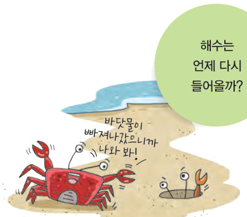
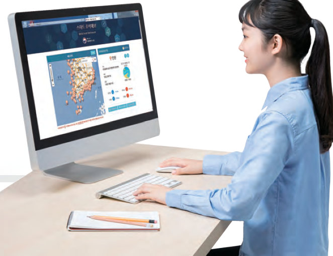
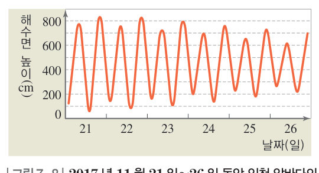

드나드는
해수
해수는 언제 다시 들어올까? 가상 바닷가에서 3 일 동안 시간을 흘려 보내며 만조와 간조, 조차를 찾고, 조석 예보 자료로 갯벌 체험과 배가 나가기 좋은 시간을 정한 뒤, 대단원 최종 점검으로 수권과 해수의 순환을 정리하자.
바닷가에서는 해수가 육지를 향해 들어오는 밀물과 바다를 향해 빠져나가는 썰물을 쉽게 볼 수 있다. 이때 밀물로 해수면의 높이가 가장 높아졌을 때를 만조라 하고, 썰물로 해수면의 높이가 가장 낮아졌을 때를 간조라고 한다. 이처럼 해수면의 높이가 주기적으로 높아졌다 낮아지는 현상을 조석이라고 한다.

우리나라 해안에서 만조와 간조는 하루에 약 두 번씩 일어난다. 연속되는 만조와 간조 때의 해수면 높이차를 조차라고 한다. 조차는 매일 조금씩 달라지므로 만조와 간조가 일어나는 시간을 알면 실생활에 활용할 수 있다. 고기잡이배가 바다로 나가거나 들어올 때, 갯벌에서 조개나 굴을 캘 때 등에 활용하고, 바다 갈라짐이 나타나는 지역으로 여행갈 때에도 활용한다.

| 구분 | 간조 | 만조 | 간조 | 만조 |
|---|---|---|---|---|
| 시각 | 00:24 | 06:10 | 12:21 | 18:31 |
| 높이(cm) | 117 | 778 | 56 | 843 |
우리나라 서해안 지역에서는 바다 갈라짐이 자주 나타난다. ① 바다 갈라짐을 체험할 수 있는 지역을 찾는다. ② 해당 지역의 조석 예보를 조사하여 여행하는 날에 바다 갈라짐이 나타나는 시간을 알아 둔다. ③ 교통편과 비용을 포함한 여행 계획서를 구체적으로 작성한다.
| (가) | |
| (나) | |
| (다) |
3조석
⑵ : 밀물로 해수면의 높이가 가장 높아졌을 때 · : 썰물로 해수면의 높이가 가장 낮아졌을 때
⑶ 만조와 간조일 때의 해수면의 높이차는 매일 조금씩 .
🔑 열쇠 모으기 — 해수는 어떤 특징이 있을까?
첫 번째 열쇠: 바다 깊은 곳으로 들어가면 해수의 수온이 낮아진다. · 두 번째 열쇠: 해수에는 염화 나트륨이 가장 많이 녹아 있어 짠맛이 강하다. · 세 번째 열쇠: 해수는 일정한 방향으로 나타나는 지속적인 흐름을 보인다.
| 평가 기준 | 스스로 평가 |
|---|---|
| 조석 예보 자료를 옳게 조사하고 해수면의 높이차를 해석하였다. | |
| 만조와 간조를 실생활에 활용하는 방안을 제시하였다. | |
| 토의할 때 다른 모둠 구성원의 의견을 존중하였다. |